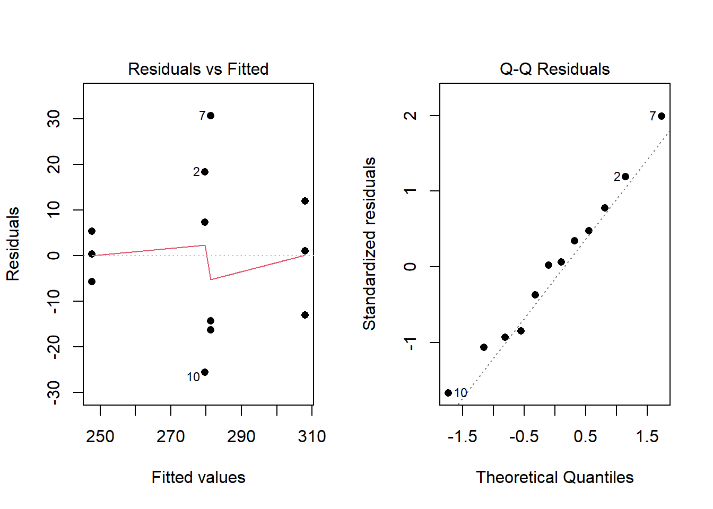
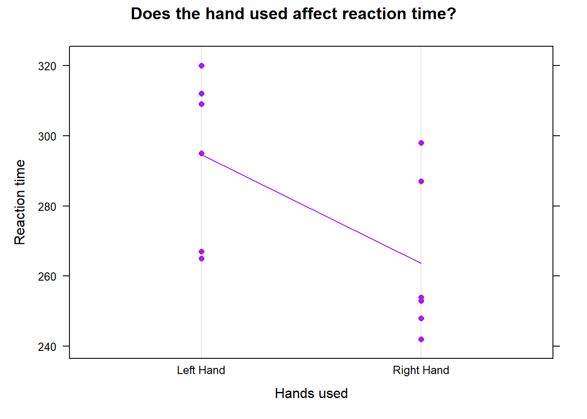
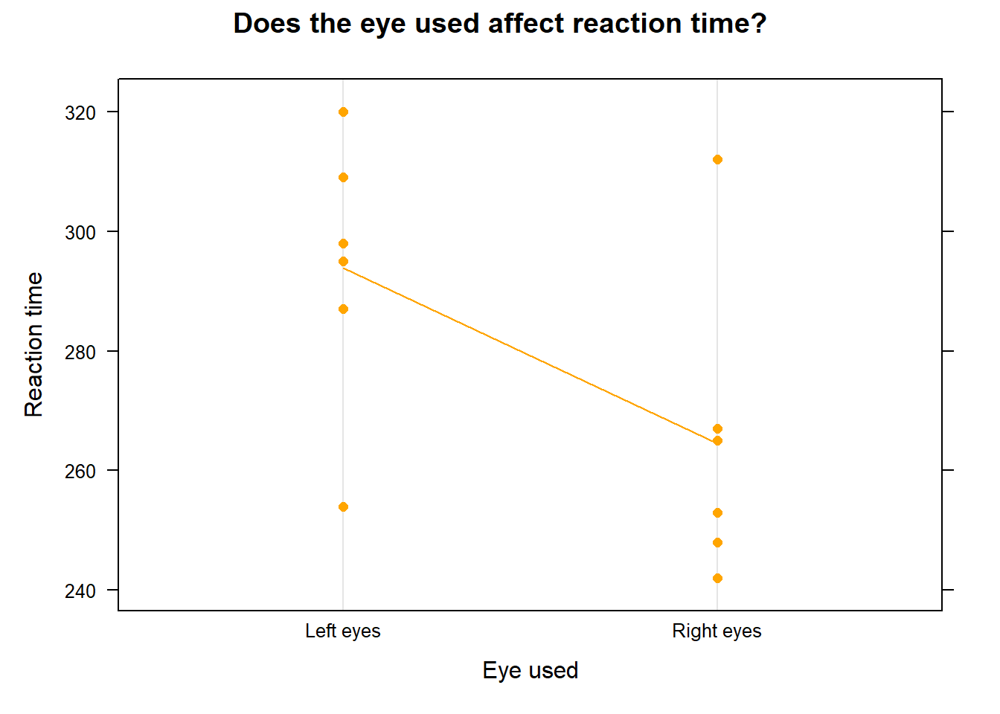
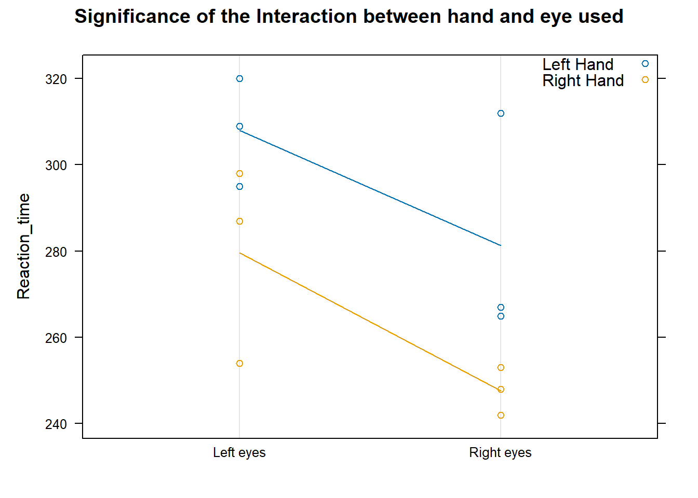

library(mosaic)
library(DT)
library(pander)
library(car)
library(tidyverse)
# Record your data from your own mini experiment in Excel.
# Save the data as a .csv file in the Data folder of the Statistics-Notebook.
# Read in the data
reactiont <- read_csv("Reaction_time_data.csv") Is Reaction Time Affected by any Variable?
Background
Ever wonder for your reaction time depends of have your take a reaction time test. This experiment is to check if a person’s reaction time depends on what hand they used (left/right) and also what eye is open (right/left).
Data source
The data was gotten from my personal results using all combinations of the factors of the data on a reaction test site. Each combination was run three times. The link of the reaction test site is: ReationTest.
The below table shows the records of the data collected.
datatable(reactiont)Analysis
To test if reaction time is affected by the hand used and eye used, we would carry out a two-way ANOVA test. We will use the ANOVA test because there are two factors involved; hand used and eye used. We could use two t-tests but that would increase the probability of get errors, so an ANOVA, which is just one test, would be preferred.
Hypotheses
This analysis will use a two-way ANOVA with the factors of Hands, and Eyes and their interaction. Thus, we have three sets of hypotheses that need to be stated in order to understand the effect of each on Reaction time.
- Does the
hand usedaffect Reaction?
Factor: Hand with levels \(right\)(r) and \(left\)(l). \[
H_0: \mu_r = \mu_l = \mu
\]
\[ H_a: \mu_r \neq \mu_l \]
- Does the
Eyes Usedaffect Reaction time?
Factor: Eyes with levels \(right\)(r) and \(left\)(l). \[
H_0: \mu_r = \mu_l = \mu
\] \[
H_a: \mu_r \neq \mu_l
\]
- Does the effect of
Hand usedchange for differentEye Used? (Does the effect ofHand Usedchange for different levels ofEye Used?) In other words, is there an interaction betweenHand UsedandEye Used?
\[ H_0: \text{The effect of Hand Used is the same for any Eye used.} \]
\[ H_a: \text{The effect of Hand Used is not the same for any Eye used.} \]
Two-way ANOVA
A significance level of \(\alpha = 0.05\) will be used for this study.
To find the results for the hypothesis, we conducted the two-way ANOVA and the result is the below:
myaov <- aov(Reaction_time ~ Hands + eyes + Hands:eyes, data=reactiont)
summary(myaov) %>% pander()| Df | Sum Sq | Mean Sq | F value | Pr(>F) | |
|---|---|---|---|---|---|
| Hands | 1 | 2883 | 2883 | 8.133 | 0.02142 |
| eyes | 1 | 2581 | 2581 | 7.282 | 0.02714 |
| Hands:eyes | 1 | 21.33 | 21.33 | 0.06018 | 0.8124 |
| Residuals | 8 | 2836 | 354.5 | NA | NA |
From the test above, we see a p-value output for each of the hypothesis stated. Any p-value that is less than the level of significance we that the factor is significant. The conclusions are that Hand Used is a significant factor \((p=0.02142)\), but Eyes Used does have a significant effect on reaction time \((p=0.02714)\), and the effect of Hand Used seems to NOT depend on the Eyes Used because the interaction term is not significant \((p=0.8124)\).
Diagnostic Plots
To check if the results for this test are to be trusted, we would check the requirements to carry out this test. We created a plot of the residuals vs the fitted to check if the variance is constant. We also created a Q-Q plot of the Residuals to check the normallity of the error terms.
par(mfrow=c(1,2))
plot(myaov, which=1:2, pch=16)
From the above graph, we see that the Q-Q plot of residual (graph to the right) looks good with all points close to the line, so we can say the error terms are normal. The graph of th residuals vs the fitted does not look very good because of the data points in the middle, but it is not enough to take it into consideration, so we would still assume that it has a constant variance.
Graphical Summaries & Conclusions
The following graphics prove the results of each of the three hypothesis tests. They would also give additional on the relationship.
Hand Used
The below chart and table is to prove the finding of our test on Hand Used.
dotplot(Reaction_time ~ Hands, data=reactiont, type=c("p","a"), main="Does the hand used affect reaction time?", col='purple', xlab="Hands used", ylab="Reaction time") 
reactiont %>%
group_by(Hands) %>%
summarise(`Mean Reaction time`=mean(Reaction_time)) %>%
pander(caption="Mean of each hand")| Hands | Mean Reaction time |
|---|---|
| Left Hand | 294.7 |
| Right Hand | 263.7 |
The above chart and table verifies the finding of the test we carried out. The line in the chart is showing the average of the two factors. We can see that right hand has a lower average than left hand. This means that the hand used to take the reaction time test would affect the result. For our data set (Which is my personal results), right hand would give a lower reaction time.
Tension Level
The below chart and table is to prove the finding of our test on Eye Used.
dotplot(Reaction_time ~ eyes, data=reactiont, type=c("p","a"), main="Does the eye used affect reaction time?", col='orange', xlab="Eye used", ylab="Reaction time") 
reactiont %>%
group_by(eyes) %>%
summarise(`Mean Reaction time`=mean(Reaction_time)) %>%
pander(caption="Mean of each eye")| eyes | Mean Reaction time |
|---|---|
| Left eyes | 293.8 |
| Right eyes | 264.5 |
The above chart and table verifies the finding of the test we carried out. The line in the chart also shows the average of the two factors. We can see that right eyes has a lower average than left eyes. This means that the eye used to take the reaction time test would affect the result. For our data set (Which is my personal results), right eye would give a lower reaction time.
Tension Choices Depending on Wool Type
The below chart and table is to prove the finding of our test on the interaction between Hand Used and Eye Used.
dotplot(Reaction_time ~ eyes, data=reactiont, groups=Hands, type=c("p","a"), main="Significance of the Interaction between hand and eye used", auto.key=list(corner=c(1,1)))
reactiont %>%
group_by(Hands, eyes) %>%
summarise(`Mean Reaction time`=mean(Reaction_time)) %>%
pander(caption="Mean of each interaction between Hand Used and Eye Used")| Hands | eyes | Mean Reaction time |
|---|---|---|
| Left Hand | Left eyes | 308 |
| Left Hand | Right eyes | 281.3 |
| Right Hand | Left eyes | 279.7 |
| Right Hand | Right eyes | 247.7 |
The above chart and table verifies the finding of the test we carried out. The line in the chart is showing the average reaction time of each hands for each eyes. We can see that line for both hands have lines similar and approximately parallel to each other. This means that the effect of hand used to take the reaction time test is the same for each eye.
Conclusion
With all the information found in the experiment, we can conclude that the hand and eye used during a reaction time test would affect the result of the test. However, we also found that the effect of the hand use to take the reaction time test would be the same for each eye when used.